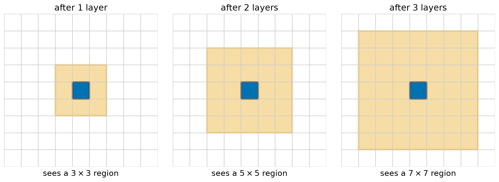
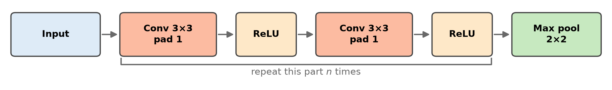
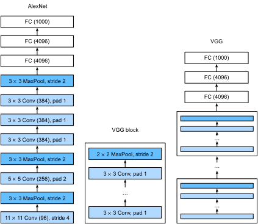
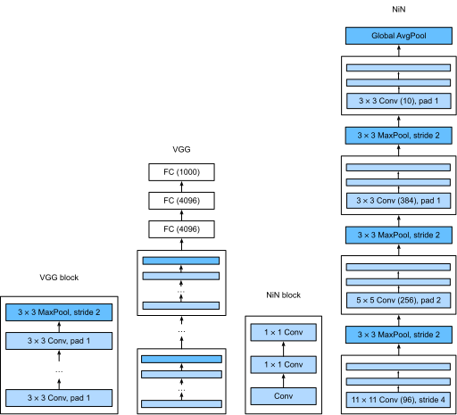
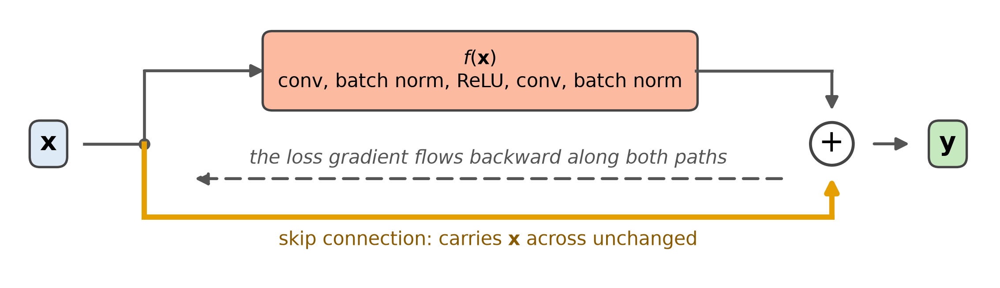
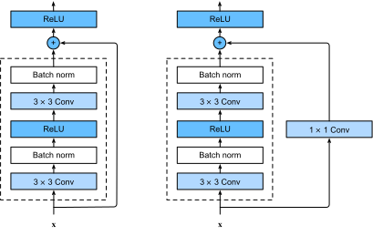

Advanced Machine Learning
This slide deck is still under active development. Expect changes before it is finalized.
nn.Module, including the shortcutWhat can a 3 \times 3 filter possibly see?

| Layer | Feature map (C channels) | Region of the image one value sees |
|---|---|---|
| conv 3×3 | C \times 224 \times 224 | 3 \times 3 |
| conv 3×3 | C \times 224 \times 224 | 5 \times 5 |
| max pool 2×2 | C \times 112 \times 112 | 6 \times 6 |
| conv 3×3 | C \times 112 \times 112 | 10 \times 10 |
| conv 3×3 | C \times 112 \times 112 | 14 \times 14 |
| max pool 2×2 | C \times 56 \times 56 | 16 \times 16 |
| conv 3×3 | C \times 56 \times 56 | 24 \times 24 |
| conv 3×3 | C \times 56 \times 56 | 32 \times 32 |
Same as our CNN
What the 2012 ImageNet winner (AlexNet) added
Stack many small convolutions: each layer looks at patterns of the layer before, so deeper layers see larger structures built out of smaller ones. The ingredients from last time (ReLU, dropout, augmentation, more data) are what made it possible to train.
How do you design a network with 11 layers, or 100?
Tip
These would all be hyperparameters that we’d be changing.
Hyperparameters are parameters that aren’t trained during SGD, but instead set prior to the training run.
Design one small repeating block, then stack it. The network is then a short list: for each block, how many convolutions and how many channels.

\underbrace{2 \cdot (3 \cdot 3) \cdot c^2}_{\text{two } 3 \times 3 \text{ layers}} = 18c^2 \qquad \text{vs.} \qquad \underbrace{(5 \cdot 5) \cdot c^2}_{\text{one } 5 \times 5 \text{ layer}} = 25c^2
| Same region seen | Stack of 3 \times 3 | One larger kernel | Saved |
|---|---|---|---|
| 5 \times 5 | 2 layers: 73,728 | 102,400 | 28% |
| 7 \times 7 | 3 layers: 110,592 | 200,704 | 45% |
def vgg_block(num_convs, in_channels, out_channels):
layers = []
for _ in range(num_convs):
layers.append(nn.Conv2d(in_channels, out_channels, kernel_size=3, padding=1))
layers.append(nn.ReLU())
in_channels = out_channels
layers.append(nn.MaxPool2d(kernel_size=2, stride=2))
return nn.Sequential(*layers)(num_convs, out_channels) pairsdef vgg(conv_arch, in_channels=3, num_classes=1000):
blocks = []
for num_convs, out_channels in conv_arch:
blocks.append(vgg_block(num_convs, in_channels, out_channels))
in_channels = out_channels
return nn.Sequential(
*blocks,
nn.Flatten(),
nn.LazyLinear(4096), nn.ReLU(), nn.Dropout(0.5),
nn.LazyLinear(4096), nn.ReLU(), nn.Dropout(0.5),
nn.LazyLinear(num_classes)
)
conv_arch = ((1, 64), (1, 128), (2, 256), (2, 512), (2, 512)) # VGG-11
| After | Output shape |
|---|---|
| input | (1, 3, 224, 224) |
| block 1 | (1, 16, 112, 112) |
| block 2 | (1, 32, 56, 56) |
| block 3 | (1, 64, 28, 28) |
| block 4 | (1, 128, 14, 14) |
| block 5 | (1, 128, 7, 7) |
A block is the unit of design. Stacking blocks that halve the size and grow the channels is how we get depth without choosing every layer by hand.
| Model | Total parameters | In the head | Share |
|---|---|---|---|
| AlexNet | 61,100,840 | 58,631,144 | 96% |
| VGG-11 | 132,863,336 | 123,642,856 | 93% |
The convolutional layers already did the hard work. Instead of a giant linear layer to read their output, mix the channels at each position, then average each channel over all positions.
\begin{aligned} o_1 &= 2 \cdot 1 + 1 \cdot 0 + 3 \cdot (-1) = -1 \\ o_2 &= 2 \cdot 0.5 + 1 \cdot 0.5 + 3 \cdot 0.5 = 3 \end{aligned}
\begin{aligned} \begin{array}{cc} 1 & 3 \\ 5 & 7 \end{array} &\;\to\; \tfrac{1+3+5+7}{4} = 4 \\[1em] \begin{array}{cc} 0 & 2 \\ 2 & 0 \end{array} &\;\to\; \tfrac{0+2+2+0}{4} = 1 \end{aligned}
Start from the same place as before: the last block hands us a 512 \times 7 \times 7 feature map
| Input | Output | Parameters |
|---|---|---|
(1, 512, 7, 7) |
(1, 1000) |
513,000 |
(1, 512, 14, 14) (a larger image) |
(1, 1000) |
513,000 |
Flatten, then big linear layers
1 \times 1 convolution, then global average pool

A 1 \times 1 convolution gives us a learned way to combine channels at each position, so we can then average over positions. The huge linear layer needed a weight for every position, and now we do not.
Can we just keep stacking?
Overfitting: training error is low, validation error is high.
Degradation: training error is high.
Add each block’s input to its output. The gradient gets a direct path around the block, and the block only has to learn a correction.
\mathbf{y} = \mathbf{x} + f(\mathbf{x})

\frac{\partial \mathbf{y}}{\partial \mathbf{x}} = 1 + \frac{\partial f}{\partial \mathbf{x}}
Plain stack
0.1^8 = 10^{-8}
The gradient all but vanishes
Residual blocks
(1 + 0.1)^8 \approx 2.1
The gradient survives

class Residual(nn.Module):
def __init__(self, in_channels, out_channels, stride=1):
super().__init__()
self.conv1 = nn.Conv2d(in_channels, out_channels, 3, stride=stride, padding=1)
self.bn1 = nn.BatchNorm2d(out_channels)
self.conv2 = nn.Conv2d(out_channels, out_channels, 3, padding=1)
self.bn2 = nn.BatchNorm2d(out_channels)
self.skip = None
if in_channels != out_channels or stride != 1:
self.skip = nn.Conv2d(in_channels, out_channels, 1, stride=stride)
def forward(self, x):
out = F.relu(self.bn1(self.conv1(x)))
out = self.bn2(self.conv2(out))
shortcut = x if self.skip is None else self.skip(x)
return F.relu(out + shortcut)forward is the formula: out is f(\mathbf{x}), shortcut is \mathbf{x}, and the block returns their sum (then a ReLU)| Block | Input | Output | Skip path | Parameters |
|---|---|---|---|---|
Residual(64, 64) |
(1, 64, 56, 56) |
(1, 64, 56, 56) |
copy | 74,112 |
Residual(64, 128, stride=2) |
(1, 64, 56, 56) |
(1, 128, 28, 28) |
1 \times 1 conv | 230,272 |
| Part | What it is | Output shape |
|---|---|---|
| Stem | 7 \times 7 conv, 3 \times 3 max pool | 64 \times 56 \times 56 |
| Stage 1 | 2 blocks, 64 channels | 64 \times 56 \times 56 |
| Stage 2 | 2 blocks, 128 channels, stride 2 | 128 \times 28 \times 28 |
| Stage 3 | 2 blocks, 256 channels, stride 2 | 256 \times 14 \times 14 |
| Stage 4 | 2 blocks, 512 channels, stride 2 | 512 \times 7 \times 7 |
| Head | Global average pool, linear | 1000 |
A residual block adds its input back to its output, so every block starts as “do nothing” and learns a correction. That is what makes networks with dozens, and even hundreds, of layers trainable.
Reusing the representation
Linear(512, 1000), is the same linear classifier we have used since the first classification lectureDeep networks learn representations in layers, from edges to objects. Those representations are not only the means to one classification: they are reusable.
| Idea | What it does | Why it matters |
|---|---|---|
| Stacked small kernels | Receptive field grows layer by layer | Large structures from small filters, fewer parameters |
| The block (VGG) | One repeated unit; halve the size, grow the channels | Describe a deep net in a list |
| 1 \times 1 convolution | Mix channels at each position | Reshape channel counts cheaply |
| Global average pooling | One number per channel | Replaces a huge linear head |
| Residual connection | \mathbf{y} = \mathbf{x} + f(\mathbf{x}) | Very deep networks train |
Each of these networks took one idea as far as it would go: stack small convolutions (VGG), use nothing but convolutions (NiN), add the input back at every block (ResNet).
CST463 · Advanced Machine Learning